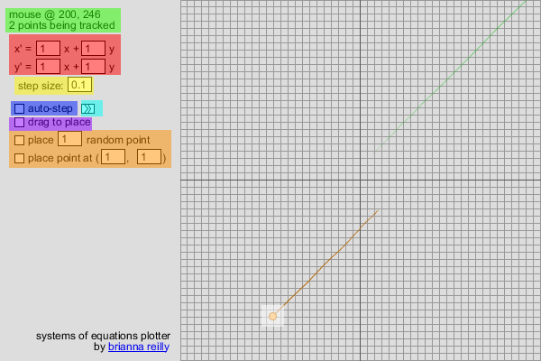

A Plotter for Systems of Linear Differential Equations

Yes, the title is rather self-explanatory. This is a program made in Processing, a language that takes otherwise plain Java and makes it easily visual. It was made by Brianna Reilly for a final project in Mr. Bonanomi's LADE (Linear Algebra and Differential Equations) class.
Inspired by this resource written by Darryl Nester, this project was an experiment in learning how computers approximate and display systems of linear differential equations. This project aimed to be illustrative of how a source point reacted within a system, not just through a still line tracing its movement, but an animation of the movement itself through the field. It also aimed to be something pretty to look at, as the author of the program really saw a beauty in the structure of these fields, and wanted to share that with others.
Controls:
- green: display data, showing where the mouse is, and how many points are being rendered
- red: input the system of equations by each coefficient
- yellow: controls how precisely the points will move. ".1" works best for a blend of program speed and precision
- blue: if checked, lets the points move on their own
- cyan: while blue section is unchecked, will move the points forward a single step
- violet: changes point placing system between mouse click (unchecked) and mouse click-and-drag (checked)
- orange: remote point placing system; either place a number of random points or a single point to the typed location
- white: how a placed point looks on screen! notice its tail showing where it once was, and the fading tail of a now off-screen point
Process:
Links:
For the finalized project, ready to be downloaded and run on Windows computers, use this link for the folder containing the exported program. Make sure you have a relatively up-to-date version of Java on your computer, or else the program cannot run properly.
If the user is running an operating system other than Windows, it is recommended that they download the Processing IDE and copy in the source code, as it is untested on other systems and may not work properly. To (hopefully) copy it properly:
- Download each ".pde" file
- Put all these files in a folder titled "diff_eq"
- Double-click "diff_eq.pde", and associate the ".pde" filetype with the Processing IDE if it isn't already
For the source code of the project, this link leads to a folder containing the original Processing code files, ready to be viewed, downloaded, and used in anyone else's projects, whether scholarly or recreational. It would be appreciated if a mention of the author was added to any Processing class files that are directly copied and only minimally editted. However, there is no legal obligations or licenses to restrict users from taking snippets of code, or being inspired by this to make their own version.